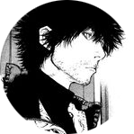

/Twitter - Acesse meu Twitter
/Twitter - Acesse meu Twitter /Instagram - Me siga no Instagram
/Instagram - Me siga no Instagram /Github - Veja meus repositorios no Github
/Github - Veja meus repositorios no Github /Linkedin - Aqui meu Linkedin
/Linkedin - Aqui meu Linkedin
Sou conhecido como Matsumo, estudo a 3 anos e pretendo me tornar junior até 2026. Nasci dia 26 de maio de 2008. Estudo front-end, backend, banco de dados e cybersegurança. Gosto de mexer com jogos no meu tempo livre. Estudo um curso tecnico de Desenvolvimento de Sistemas.
/Twitter - Acesse meu Twitter/Instagram - Me siga no Instagram/Github - Veja meus repositorios no Github/Linkedin - Aqui meu Linkedin